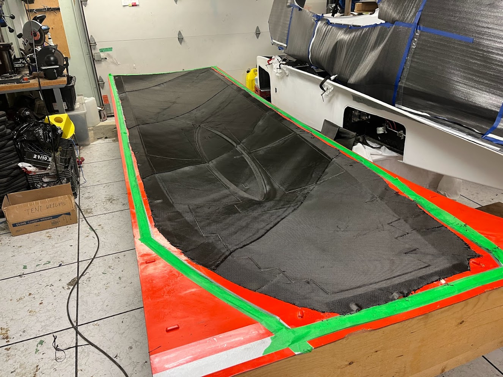
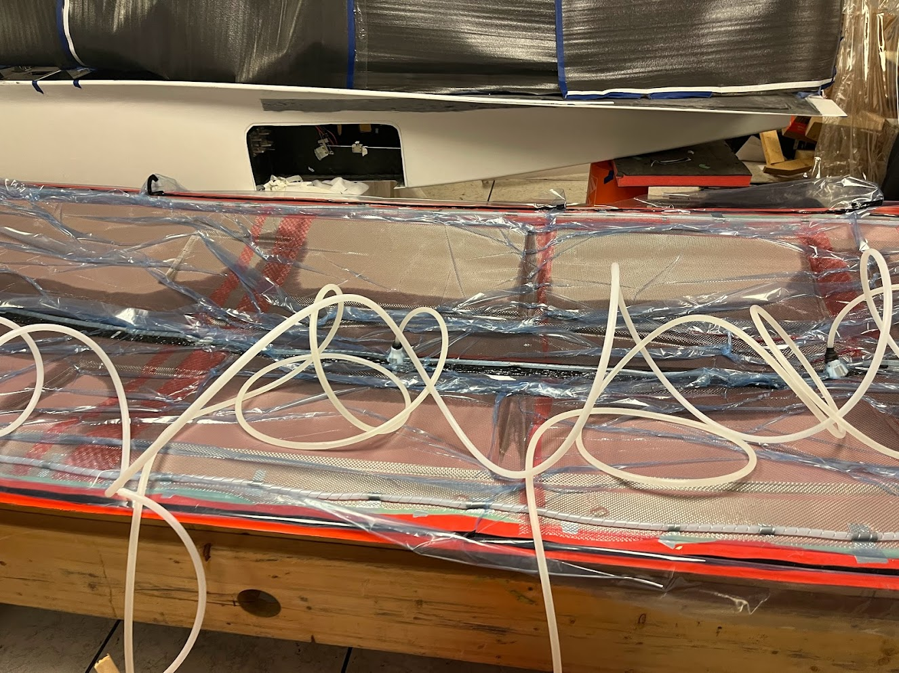
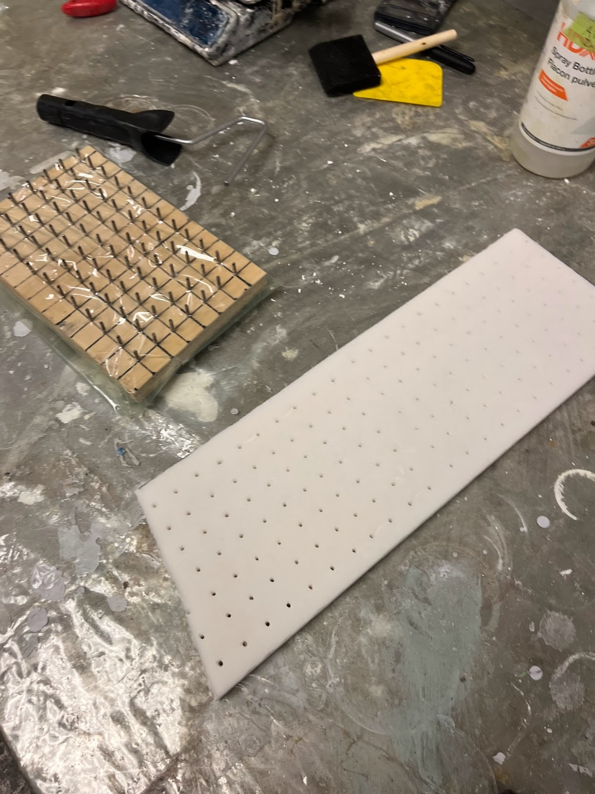
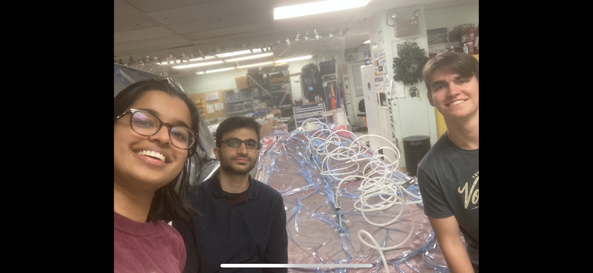
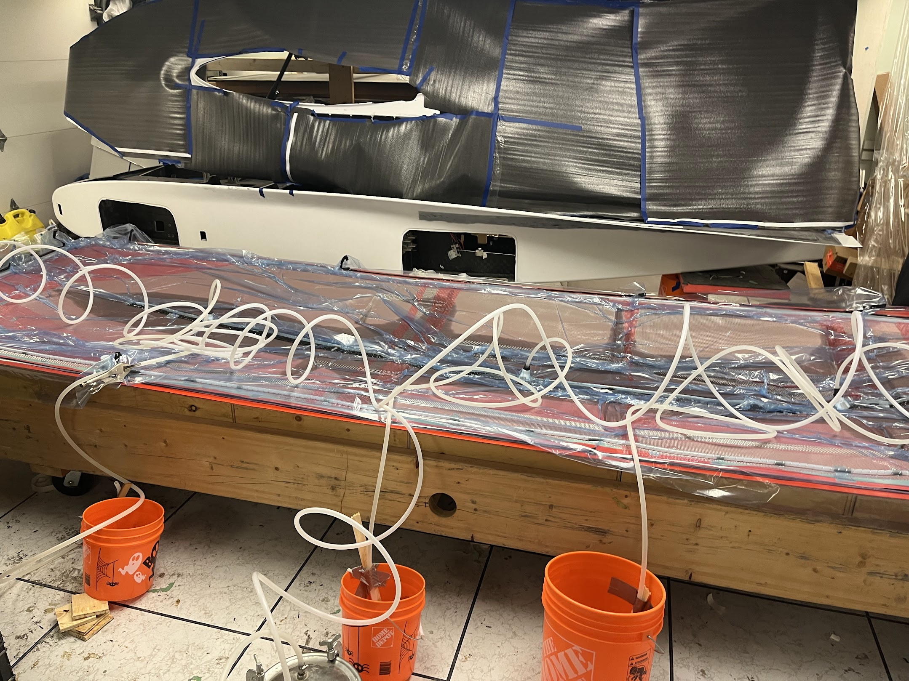
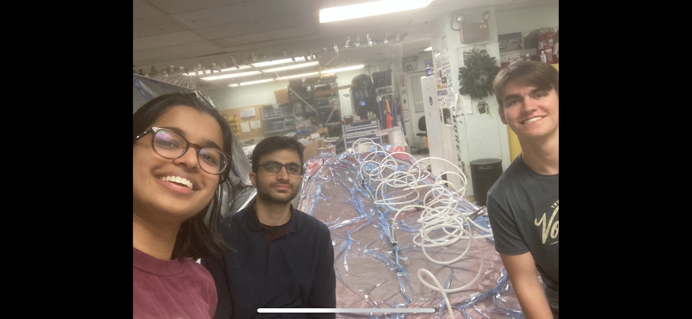
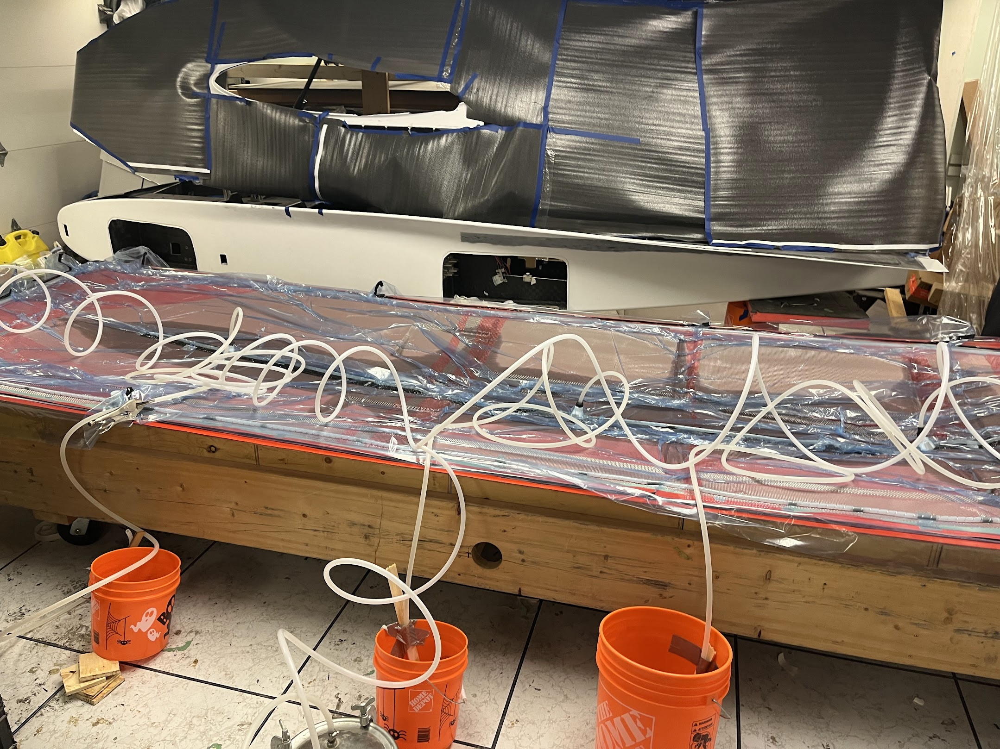

Vacuum Infusion
 I helped on this project under our Struct/Fab lead Rebecca. While I did not plan the project, I did get valuable experience in the process and was able to help out with manufacturing and the layout of all of the inlets, outlets, and meshing involved. I also helped with the dry layups as seen above.
One step in this process was punching out holes in our core to allow for resin flow through the core during infusion. Previously, we had been punching out the holes one by one. I thought this was pretty innefficient so I decided to make a quick tool to help make the process faster. It was a little bit hard to get it out once pushed into the core, but it helped speed up and regularize the holes. A smaller version of this would be most effective in the future to avoid the whole nail bed problem of too much surface area while still reducing hole punching time and fatigue.
 



Final infusion went very smoothly and we did not have too many problems. We had inlets in the middle of the mold for the resin, outlets on the edges, lots of flow mesh in between, and then a catch bucket connected to the outlets.